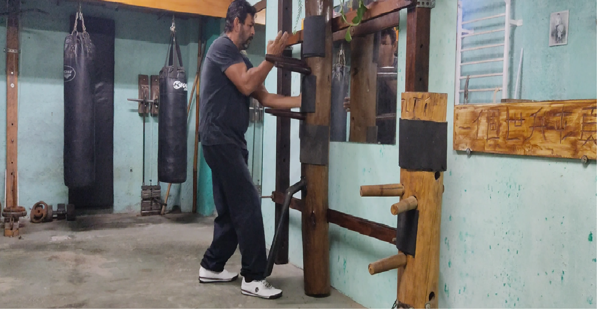

🥋 O Caminho do Wing Chun
O Wing Chun é uma arte marcial tradicional chinesa baseada em princípios de economia de movimento, percepção e equilíbrio entre corpo e mente. Nos treinos com o instrutor Ivaldo J. Silva, a técnica é integrada à consciência terapêutica e filosófica, proporcionando uma prática que une força, leveza e autodomínio.
Cada aula é uma jornada interior — um convite para despertar o corpo e silenciar a mente. O treino PROWES mantém viva a essência do verdadeiro Wing Chun, transmitido de geração em geração.
